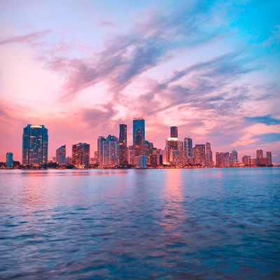

Darika Samak mark as done Listing on Product Hunt so that we can reach as many potential users
Website Redesign
TODAY
22:12
Driaka Samak uploaded 4 files on An option to search in current projects or in all projects

6:02 PM
Emelee Simchenko commented on Account for teams and personal in bottom style
During a project build, it is necessary to evaluate the product design and development against project requirements and outcomes